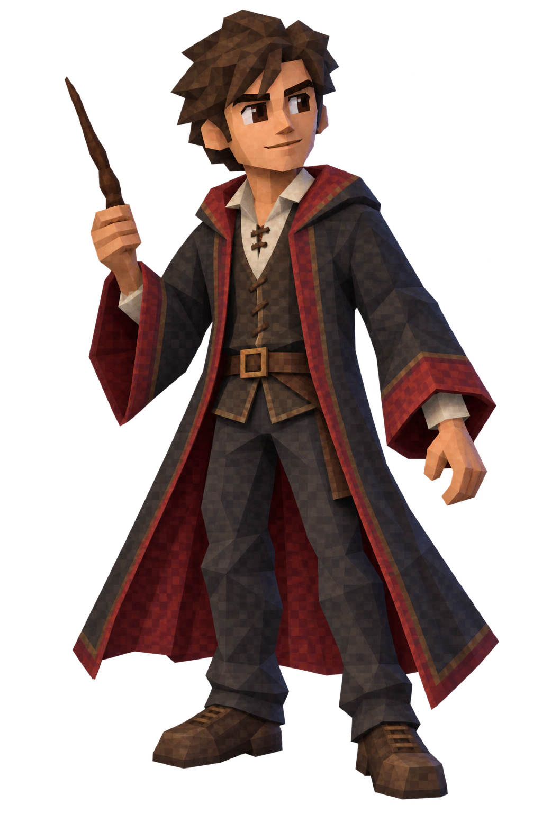

100% HP
С подключённым iPhone минуты из Instagram, TikTok, YouTube и VK суммируются между днями.
ТЬМА ВЗЯЛА ВЕРХ
Герой пал
Четыре крестража разрушены. Десять минут мини-тренировки вернут силы.
Покупки и другие занятия откроются после оживления.
Таймеры
Таймер считает время и при блокировке экрана. Магический сигнал прозвучит, когда игра открыта и включены звуки; после блокировки — при возвращении в игру.
Занятия
Коллекция
Настройки
Прогресс и iPhone
Своя синхронизация для iPhone
Этот код относится только к вашему прогрессу. Скопируйте его, установите общую команду и вставьте код при установке.
После установки запустите команду один раз. Для автоматической отправки создайте в «Командах» автоматизацию «Приложение → Закрыто» для Instagram, TikTok, YouTube и VK с действием «Запустить команду ScrollKillerFriends».
«Обновить данные» запускает установленную команду на iPhone. Отчёты автоматически загружаются при открытии игры. Для владельца прежняя команда ScrollKiller продолжает работать; друзья устанавливают свою ScrollKillerFriends по инструкции выше.
Версия GitHub Pages: 4
Резервная копия
Скачайте файл прогресса. Если iPhone подключён, копия содержит личный ключ синхронизации — храните её только в приватном репозитории.
Установка
Safari → «Поделиться» → «На экран Домой». Игра откроется как веб-приложение. Для работы без интернета сначала откройте её один раз онлайн.